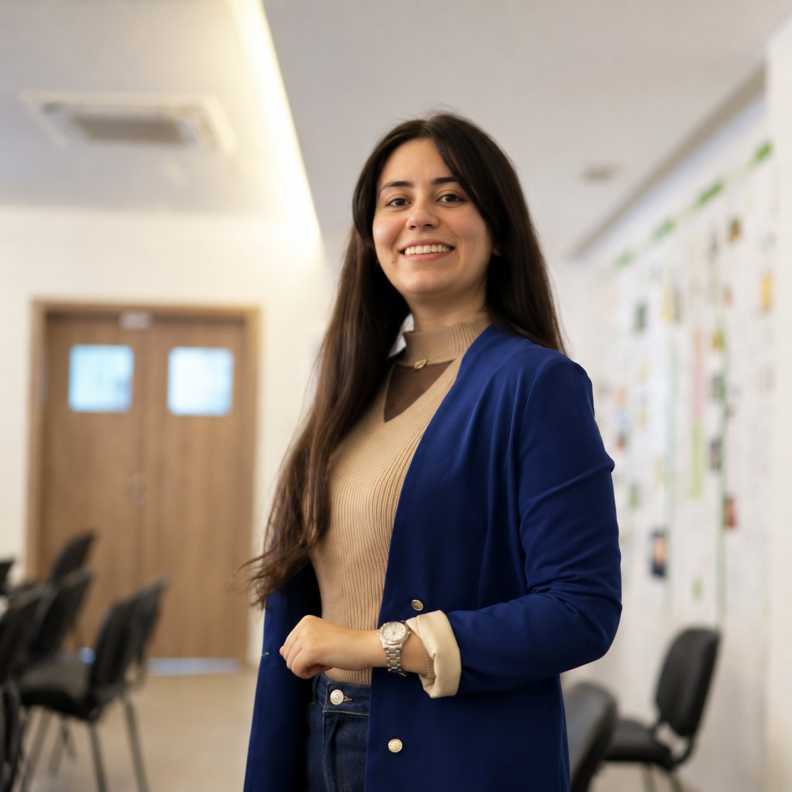

GENERATIVE AI · RAG
IA générative / Systèmes agentiques
SmartCampus AI
Assistant conversationnel d’orientation pour accompagner les futurs étudiants dans leur choix de formation.
Découvrir le projet ↗Institut International de Technologie de Sfax
À la recherche d’un stage de fin d’études, je m’intéresse particulièrement au développement Full-Stack, à l’IA générative et aux pratiques DevOps (CI/CD, GitLab CI).



const portfolio = {
software: "creative",
mindset: "problem-solving",
goal: "PFE 2027"
};Assistant conversationnel d’orientation pour accompagner les futurs étudiants dans leur choix de formation.
Découvrir le projet ↗Analyse de vidéos d’examen pour repérer les comportements normaux et anormaux.
Découvrir le projet ↗Plateforme de gestion événementielle avec espaces utilisateurs, réservations et tableau de bord.
Découvrir le projet ↗Application mobile de gestion d’événements sportifs et de suivi des participants.
Découvrir le projet ↗Découvrez mon parcours, consultez mon CV ou contactez-moi pour une opportunité de stage PFE.